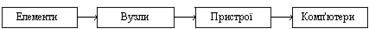
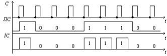
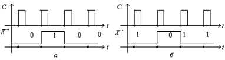
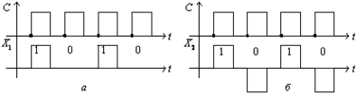

Поняття елементів, вузлів і пристроїв комп'ютерної схемотехніки
Технічні засоби комп'ютерної схемотехніки залежно від функцій, які вони виконують, поділяють на елементи, функціональні вузли і пристрої, а також мікропроцесори та комп'ютери (рисунок 1). Вони призначені для оброблення дискретної інформації і тому називаються цифровими [1].
Технічні засоби цифрової схемотехніки в даний час основані на інтегральних мікросхемах (IMC) різного ступеня складності.
Рисунок 1 - Склад технічних засобів комп'ютерної схемотехніки
Елементами в комп'ютерній схемотехніці називаються найменші неподільні мікроелектронні схеми (вироби), призначені для виконання логічних операцій або зберігання біта інформації. До елементів умовно відносяться і допоміжні схеми – підсилювачі, повторювачі, формувачі та ін.
Елементи будуються на основі двопозиційних ключів, що технічно реалізується найпростіше. Елементи з двома станами називаються двійковими.
На входах і виходах двійкового елемента діють напруги, які набувають у сталому режимі двох значень - високого UH і низького UL рівнів (індекси від англійських слів High і Low). Ці напруги відображають електричні сигнали. Сигнал з двома станами називається двійковим. Перехід елемента з одного стану в інший називається його перемиканням. На основі елементів будують типові функціональні вузли [2].
Елементарні дії, які виконуються в комп'ютерах за один машинний такт, називаються мікроопераціями. Наприклад, інкремент або декремент слова, зсув, інверсія, додавання та ін.
У комп'ютерах команди виконують послідовністю мікрооперацій над двійковими словами (числами). Типовими функціональними вузлами комп'ютерів називаються мікроелектронні схеми, призначені для виконання однієї або декількох мікрооперацій.
За логікою роботи функціональні вузли розподіляються на комбінаційні та послідовнісні схеми.
У комбінаційних схемах логічний стан виходів елементів залежить тільки від комбінації вхідних сигналів у даний момент часу. До функціональних вузлів комбінаційного типу відносяться суматори, дешифратори, шифратори, мультиплексори і демультиплексори, схеми порівняння (компаратори) і контролю за парністю, перетворювачі кодів.
У послідовнісних схемах логічне значення виходів визначають як комбінацією вихідних сигналів, так і станом пам'яті схеми в даний момент часу. До функціональних вузлів послідовнісного типу відносяться регістри, лічильники, генератори чисел і керуючі автомати. На основі типових функціональних вузлів будують різноманітні пристрої комп'ютерів.
Універсальність комп'ютерів забезпечує можливість приймання і видавання інформації, її зберігання та арифметико-логічне опрацьовування, а також керування усім обчислювальним процесом. Ці функції реалізуються відповідними пристроями введення, виведення, запам'ятовування, арифметико-логічними і керування.
Принцип подачі інформації на входи елементів і вузлів у тактові моменти називається дискретизацією сигналів у часі.
У комп'ютерній схемотехніці застосовуються два основних види двійкових сигналів: потенціальні й імпульсні (рисунок 2). Сигнал, який змінюється тільки в тактові моменти часу, називається потенціальним. Сигнал, що наростає в тактовий момент, а спадає в границях даного такту, називається імпульсним. Тривалість потенціального сигналу дорівнює або кратна тривалості машинного такту[2].
Рисунок 2 - Діаграми потенціальних (ПС) та імпульсних (ІС) сигналів
У логіці значення двійкового сигналу і відповідної змінної Х кодуються символами 0 (лог. 0) і 1 (лог. 1). Напругу, що відображає символ 1, позначимо через U1, а символ 0 – через U0. Розрізняють два способи кодування логічних сигналів Хі потенціальними сигналами – позитивний та негативний. При позитивному кодуванні (позитивна логіка чи угода) більший рівень напруги UН з урахуванням знака відображає лог. 1, а менший UL – лог.0, тобто Х = 1, якщо U1 = UH, та Х = 0 при U0=UL (рис. 3, а). При негативному кодуванні (негативна логіка чи угода) більший рівень напруги UH з урахуванням знаку відображає лог. 0, а менший UL – лог. 1, тобто Х = 1, якщо U1 = UL, та Х = 0 при U0 = UH (рис. 3, б).
Рисунок 3 - Логічні угоди: а – позитивна X+; б – негативна X–
Для імпульсних сигналів розрізняють два роди кодування (рисунок 4): перший – наявність імпульсу відображає лог. 1, відсутність – лог. 0; другий – наявність імпульсу однієї полярності відображає лог. 1, а іншої полярності – лог.0 [2].
Рисунок 4. Імпульсне кодування: а – першого роду; б – другого роду